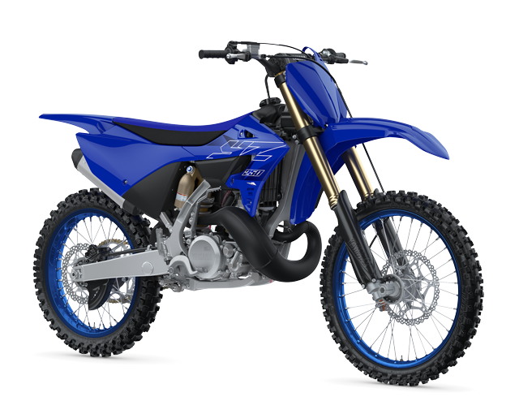

Yamaha’s race-tested YZ250 two-stroke is already known for its fast, powerful engine, plush suspension, class-leading handling and rider friendly character. With significant updates for 2022, it’s now even better. Its all-new bodywork improves the ergonomics for an even higher degree of control and agility, and the industry-leading KYB suspension features revised low speed damping for better handling, while braking performance is taken to the next level with a new front caliper. And the new higher efficiency air intake and revised exhaust system sharpens the power output of the explosive 250cc liquid-cooled YPVS engine, whereas the new more powerful front braking system and revised suspension damping help to cut lap times.
